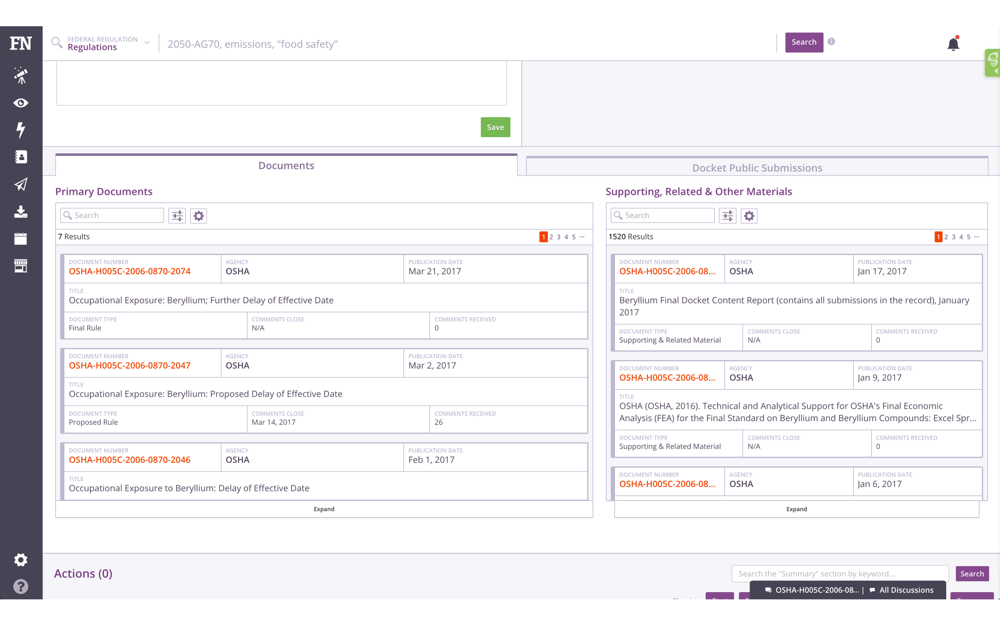
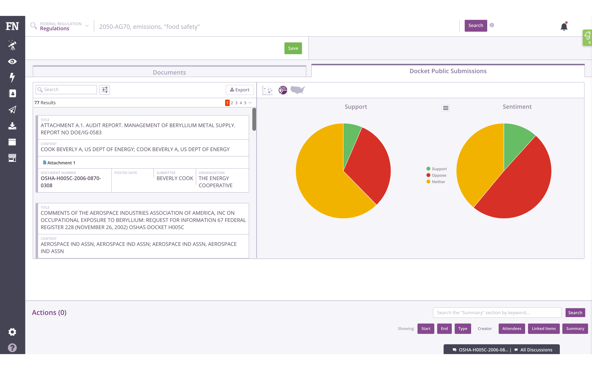
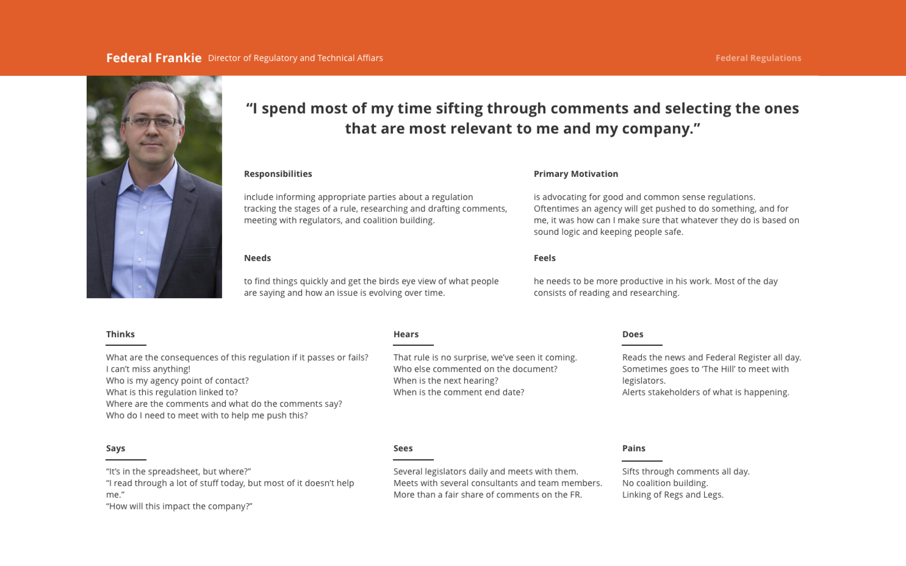
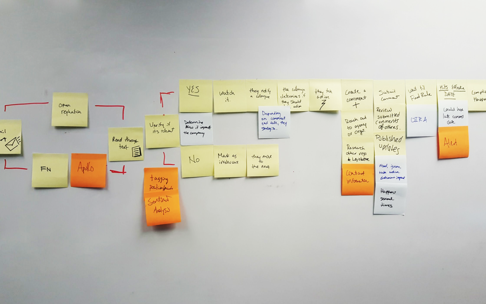
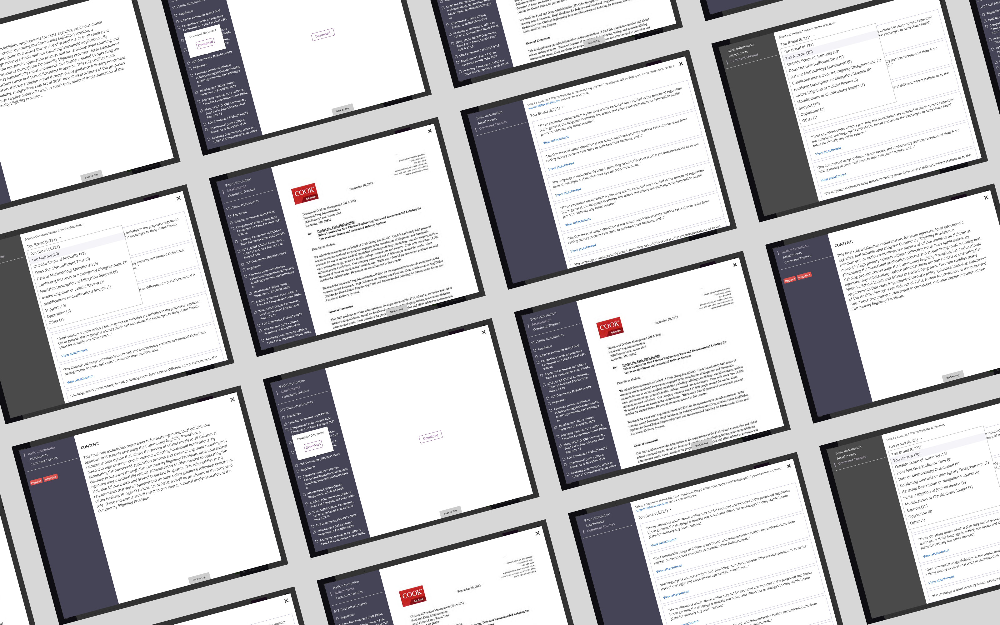
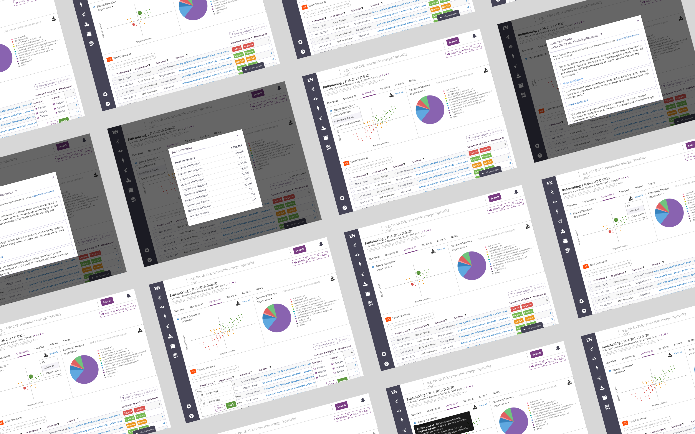
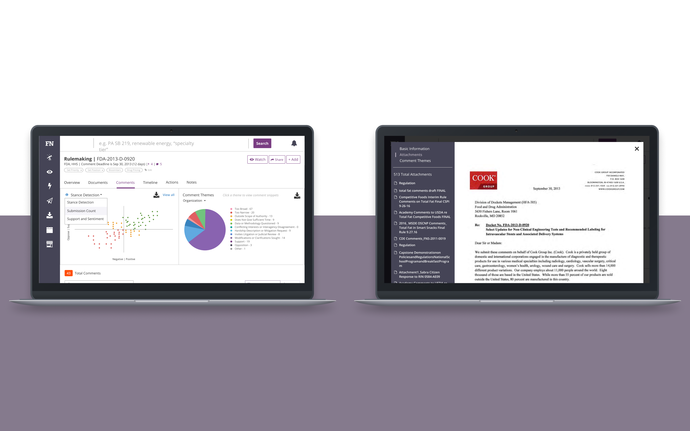

Note: I have removed confidential information from this case study. Views reflected are mine alone.
The Problem
The Federal Register website commits itself to present regulatory data to the public. More than two million companies rely on the site to stay dedicated to government issues. Businesses need to follow regulations at the risk of million-dollar fines. In late 2016, I redesigned the Federal Regulations to support FiscalNote's growth.
As the lead designer, my role was to research and define the new experience. My team consisted of a product manager, front-end developer, data scientist, and an intern researcher.
Business Objective
In the beginning, the Product, Design, Support, and Sales teams gathered to discuss several customer requests. Alongside our state data, federal information allows users to be active on both. Since they worked in both federal and state issues, this idea made sense.
The executive team echoed this view as it gave means to invest in the international market. Adding federal data for China, Portugal, and Brazil would help drive customer growth.
I worked with my Product Manager to document and track these requests. I added them to a report to show the balance between business goals and user outcomes. This report ensured alignment across the team.
Success Metric
The main challenge was easing the fear of missing out on policy information to lessen fines. Staying on top of any issue, and being proactive is key to building their strategy.
I tracked them by measuring several goals. Below are two examples of goals we set for ourselves.
- We will be successful if we reduce the time to identify similar comments by 50% within six months.
- Compare the time between the Federal Register website and our current offering.
- Using FullStory, measure the time to identify like-minded comments today.
- We will be successful if we deliver a clear and cohesive experience on our platforms.
- Review the State Regulatory feature to track cohesiveness.
- Design for an international market.

Context
We began our research by speaking to a co-worker who was a former Director of Regulatory Affairs. They gave us insight into the responsibilities and motivations of our audience. I talked with ten other users to understand their day-to-day processes and identify problems. They spend their time tracking the stages of regulation, researching, and building coalitions. Their primary motive is to be proactive on matters and protect the company. The government will issue million-dollar fines if not done well.
From the interviews, I compiled the insights, gathered the data, and presented it in a persona. I refreshed it to meet any new criteria and ensure the solutions were user-centered.
Constraints
In my initial audit, I named many design issues that required a better experience. Obtaining records was confusing, and the visual design didn't help. Next to my goals, the development team wanted to restructure the fragile backend. To scale the product and increase performance, we needed to rebuild it.
Discovery
Next, we gathered various stakeholders to brainstorm solutions around the problems. Each person sketched their solution and voted. I distilled the ideas into two significant experiences, presented them, and ideated.
- How might we help them identify like-minded comments and build coalitions?
- How might we help display documents that enable them to search for key terms?
We settled on Comment Themes and a Document Viewer. Both initiatives would help them influence their legislators on significant issues.

Ideation
Based on the concepts and user research, we felt comfortable with the ideas. I designed a new customer journey to solve navigation obstacles. With feedback from the team, I began to sketch and wireframe the experience. I created three solutions, prototyped them, and ran internal usability tests for feedback. We converged on two distinct workflows and confirmed them with our users.
My goals revolved around reducing the time to find like-minded comments and ease of use. The goal for identifying was 3 minutes. The average user time was 1 minute 38 seconds, lower than that 3-minute but not the 50% decrease. While significant, we saw room for improvement. The rate for ease of use was 79%, lower than the 90% goal. While successful, I attribute the low score to an ordinary validation. With more time, I felt it could have been better.

Delivery
Over the next month, we continued to iterate the design and development efforts. As part of the process, I kept monitoring our users and made a note of new problems. Most of the comments they read, they would reuse for their purpose or to serve as a basis for a future coalition. 88% of our users felt we accomplished that goal, while the rest thought we needed more features.
 Impact
Overall, users felt more proactive. They could devise strategies with confidence and build coalitions outside their network. With the document viewer, they could find critical terms for their comments. Over the next month, the new offering added $1.8 million to the company's ARR.
While successful, we have a backlog of improvements. Most of the feedback revolved around compliance and adhering to the official rule.
